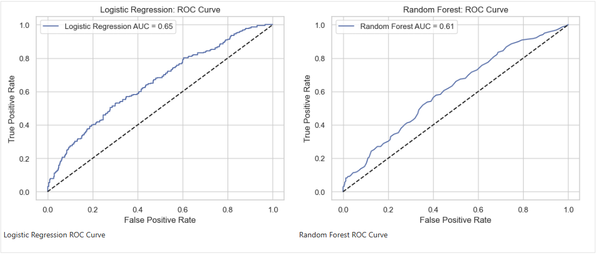
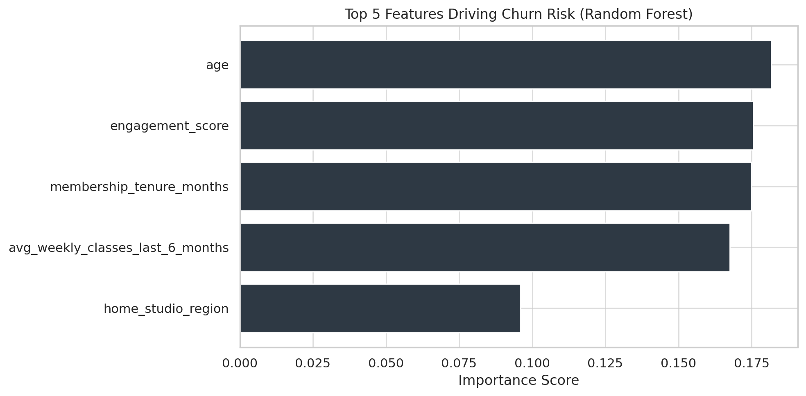

Part 3: Churn Prediction Modeling
Turning exploration into prediction
This section is all about building forecasting tools that can spot members at risk of churning before they actually leave. Their past behavior and characteristics are used to train machine learning models, which then estimate individual churn risk and highlight what factors are most likely to drive someone away. The goal is to move from just seeing patterns to acting on them proactively.
View full notebook on GitLab
Modeling Approach: Choosing the Right Tools
To predict member churn, two main types of machine learning models were explored: Logistic Regression and Random Forest. Think of these as different "brains" that learn from the data prepared in Part 2: Churn EDA, including details like engagement, membership length, and how members were referred.
The next step was to figure out which model was best at predicting churn. This involves evaluating them not just on how many churners they correctly identify, but also on how well interpretability can be understood versus just how accurate they are overall (predictive strength). Metrics like AUC, accuracy, precision, and recall were used to get a complete picture of performance.
Understanding the Models
Logistic Regression: The Straightforward Predictor
- Easy to interpret: It clearly shows which factors increase or decrease churn risk, and by how much.
- Fast to train: Quick to build, useful for a basic understanding or a starting point.
- Good for diagnostics: Helps to see straightforward, linear connections in the data.
- Limitation: Limited to linear relationships: Not great at catching complex or subtle churn patterns.
- Limitation: Lower accuracy on complex behavior: Might miss churners if the reasons are not simple and direct.
Random Forest: The Powerful, Detail-Oriented Predictor
- High accuracy: Excellent at capturing tricky, non-obvious churn behaviors.
- Reveals top drivers: Still helps to understand what factors are most important for churn, even if the how is more complex.
- Resistant to overfitting: Less likely to get fooled by random noise in the data, making its predictions more reliable in the real world.
- Limitation: Harder to interpret: It's harder to explain exactly how any single prediction was made.
- Limitation: Slower to train and deploy: Takes more computing power and time to build and use.
Which Model Performs Best?
When the models were put to the test, Random Forest clearly came out ahead across all key metrics. This means it is much better at identifying members who would actually churn, while also reducing the number of times it incorrectly flags someone as at-risk.
AUC (Area Under the Curve)
To illustrate their overall predictive power, AUC was used. Think of AUC as a single score, from 0 to 1, that tells how well a model can distinguish between members who will churn and those who won't. A score closer to 1 means the model is excellent at this separation.
Random Forest achieved an AUC of (0.61), indicating strong predictive capability. In comparison, Logistic Regression had an AUC of (0.65), showing it's less effective at distinguishing churners.
{kind=link}
Confusion Matrix
To understand the practical impact of these predictions, a Confusion Matrix was used (shown below). Think of this as a scorecard that tells the following:
- How many members were correctly predicted to churn (True Positives).
- How many members were correctly predicted to not churn (True Negatives).
- How many members were predicted to churn, but actually didn't (False Positives, wasted intervention effort).
- How many members were predicted to not churn, but actually did (False Negatives, missed opportunity to intervene).
As the confusion matrices below illustrate, Logistic Regression proved more effective at accurately flagging churners without generating as many misleading alerts.
- While Random Forest did identify a slightly higher percentage of actual churners (higher recall at 0.353 versus Logistic Regression's 0.293), Logistic Regression's significantly better precision (0.576 vs. 0.435) and overall accuracy (0.678 vs. 0.614) mean its positive predictions are much more reliable.
- This makes Logistic Regression the more practical choice for targeted interventions, as it leads to fewer instances of contacting members who aren't truly at risk, ultimately resulting in more efficient and effective retention campaigns.
{kind=link}
What Factors Drive Churn Risk? (Feature Importance)
Beyond just predicting who will churn, it's critical to understand why. The Random Forest model helps do this by identifying the most influential factors (often called "feature importance") contributing to churn risk.
As the chart below illustrates, factors related to engagement and membership length dominate, while basic demographic traits have less predictive power.
Here's a breakdown of the top five drivers and what they tell us:
- Age
Generally, older members tend to be more stable and churn less frequently, while younger members may exhibit more transient engagement patterns. - Engagement Score
This metric measures overall attendance consistency. Members with consistently high engagement are far less likely to churn, strongly reinforcing that building regular habits is crucial for long-term loyalty. - Membership Tenure (Months)
The longer a member stays, the less likely they are to churn. Specifically, churn risk drops sharply after the six-month mark, indicating that long-term members are more embedded in studio routines and communities. - Avg Weekly Classes (Last 6 Months)
A drop in attendance frequency, especially recent changes, is a significant early warning signal for disengagement that often precedes churn. - Home Studio Region
Differences between studio regions can reflect unique cultural, socioeconomic, or operational factors that influence member loyalty and overall experience.
Key Modeling Insights for Action
The modeling phase provided critical insights that move beyond just understanding churn to proactively managing it:
- High-Accuracy Churn Identification
The Random Forest model achieves strong predictive accuracy (0.61), giving studio operators a reliable tool to identify members at high risk of churning before they disengage. - Targeted Retention Efforts
By minimizing false negatives (missed churners), the Random Forest model ensures fewer at-risk members slip through the cracks. - Understanding the "Why"
Beyond prediction, the model clearly highlights engagement and tenure as the dominant drivers of churn. This insight reinforces the need for programs that build early habits and foster long-term member commitment, rather than focusing solely on demographics. - Data-Driven Decision Making
The model's outputs provide a clear, quantifiable basis for prioritizing retention efforts, allocating resources, and designing personalized strategies, moving away from guesswork to data-backed decisions.
Up Next: Part 4 - Strategic Recommendations
With modeling complete, Part 4 will focus on strategy and recommendations moving forward.
Part 2: Churn EDA Part 4: Strategy